The One (working name) is a purpose-built operations platform that replaces the ClickUp workspace currently running Seamless FM / Byblos Vista / Alpha Fixers — one facilities-maintenance operation trading under multiple brands, with ~98 workspace users and ~21,000 historical work orders. Work orders arrive from client CMMS platforms (Corrigo, Ecotrak, ServiceChannel), email, and the company's own Seamgo tool; they are accepted, dispatched to external subcontractor technicians, quoted, approved by the client, fulfilled, and then paid on both sides — the technician (AP) and the client invoice (AR).
A working prototype exists: a local monorepo app (React + Fastify + embedded Postgres) covering Sprints 1–5 — work-order table and record, 19-status pipeline with phase bar, quote builder with role-gated approval, technician payment requests, an AR audit/invoicing queue, and an obligation ("Pulse") engine — all seeded with real ClickUp data, including hero work order WO-39403.
What this pack is. The repository already contains strong primary documents (process map, roadmap, architecture proposal, sprint spec). What it lacked was the packaged layer a development effort is handed: named personas, written user journeys, a development SOP, a QA/release process, and a consolidated risk register. This document supplies those, and indexes the primary documents rather than duplicating them (§12).
| Dimension | State |
|---|---|
| Release stage | R0 Prototype (Sprints 1–4) complete and committed; Sprint 5 (obligations, Pulse, Receivables) built but uncommitted |
| Working software | 7 live screens, 30+ API endpoints, 4 SQL migrations, idempotent seed of 28 real work orders |
| Next gate | R1 Pilot (~5 users): dispatch runs the "Incoming WOs" intake for one week with zero ClickUp fallback |
| Biggest process gaps | Single git commit (no restore points); repo lives in OneDrive without a remote; 9 open process questions in the lifecycle doc; Corrigo/ServiceChannel API feasibility unproven |
Operations run today on ClickUp plus a constellation of side tools: Yoda (quote builder), PPR (tech payment requests), Argus (AR completion-audit assistant), Quotato (Quo/OpenPhone call & SMS capture with AI quote drafting), an n8n escalation bot watching the contact inbox, and a Teams PDF side-channel for assignments. ClickUp provides primitives (custom fields, statuses, lists, views) but no lifecycle awareness, no money model, no vendor module, and no client-sync boundary. The One rebuilds the primitives ClickUp actually uses — measured from the live workspace: 19 statuses, 102 custom fields, 163 lists — and makes the work-order lifecycle native, so the side tools can be absorbed rather than maintained separately.
Source: product/feature-roadmap.md (v1) — abbreviated.
| Principle | Meaning |
|---|---|
| 1 · API-first system of record | n8n, Supabase, HubSpot, QuickBooks, OpenPhone, Power BI are the constellation; The One is the sun. Every entity readable/writable via API + webhooks from day one. |
| 2 · Primitives, not features | Custom fields, statuses, views, automations are configuration. Work orders, audits, vendor records are configurations of primitives. |
| 3 · Lifecycle-native | The 15 stages of the WO lifecycle (§4) are the spine of the product, not an afterthought. |
| 4 · Prototype first; the schema is the contract | v0 is local and minimal; what must be right early is the field engine, membership model, client_visible, vendor + payable entities, and the activity log. |
| 5 · Beat Facilio where it's weak | Live SQL access for Power BI, escalation logic designed for external vendors, integration adapters as first-class modules. Facilio (~$25K/yr) remains the evaluated fallback — leverage, not Plan A. |
| Screen | Purpose |
|---|---|
| Work Orders (/) | KPI row, status-group tabs (All/Open/Active/Done/Closed), search, obligation clock chips per row, sort-by-breach. |
| WO Detail | Tabs: Overview · Messages · Audit trail · All fields. Phase bar, updates feed with client_visible toggle, photos, soft-close checklist, money card + NTE meter, payables, people/site/dates, obligations rail. |
| Quote Builder | The Yoda replacement: INCURRED + PROPOSED option sections, line items with drag-reorder, live money rail (cost / grand total / tax / NTE / profit / margin), auto-generated client summary, role-gated Submit and Approve & Send (locked, never hidden). |
| Request Payment | The PPR replacement: payee (vendor or manual), purpose, method, alternate recipient, prior payments on the WO. |
| Quotes index | All quotes: WO, status, grand total, last touched. |
| Pulse | Triage columns: Needs me now (tier 2–3) · Due soon (tier 1) · Watching (tier 0); snooze requires a reason. |
| Receivables | Audit tab (Grey-Flag completion-audit queue, ported from Argus rules) and Invoicing tab (Ready → Sent → Paid). |
Navigation also shows Dashboard, Vendors, Admin as visible-but-disabled ("Coming in a later sprint") so the product's eventual shape is legible, and an actor switcher ("Viewing as") stands in for auth until R1.
Source: product/wo-lifecycle.md roles glossary; app/packages/shared/src/index.ts role enum; seed personas.
| Code | Role | Responsibilities & authority | Prototype role |
|---|---|---|---|
| TL | Team Lead | Accept/decline authority; audits quotes; can push to client CMMS. | tl |
| ATL | Assistant Team Lead | Same touchpoints as TL; the approve-and-send gate on quotes. | atl |
| OA | Operations Admin | Intake into the system; performs the "TL Rep" push of curated updates to the client's CMMS. | —(R1) |
| AM | Account Manager | Accept/decline authority; owns the client relationship. | am |
| OM | Operations Manager (dispatcher) | Sources technicians, dispatches both visits, soft-closes. Tiers: Ops Coordinator (probation) → OM → Senior OM (quote-builder access starts here). | om / senior_om |
| HAR / AR | Accounts Receivable | AR audit, invoicing, collections. Tiers: AR (probation) → AR → Senior AR → HAR. | —(R1) |
| AP | Accounts Payable | Pays technicians at final soft close; orders parts (ap will order / ap ordered). | —(R1) |
| Exec guest | Executive read-only | Rollup dashboards only (e.g. Teresa, Rocio). | —(R2) |
| Admin | Platform admin | Full access; default seeded actor. | admin |
| Service accounts | Bots / n8n | First-class principals; every automated write is attributed like a human's. | seeded |
| Persona | Relationship |
|---|---|
| Technician | External subcontractor, sourced per job from a pooled vendor map + per-OM "my book". Reached by SMS/call (Quo/OpenPhone); never logs in before the R3 vendor portal. Paying techs fast is a vendor-retention lever. |
| Client / FM company | Issues WOs from their CMMS (Corrigo, Ecotrak, ServiceChannel), approves quotes there, receives only client_visible updates — never the full internal picture. |
Jordan Brown (admin, default actor) · Elise (atl — approves & sends) · Matt Hammond (senior_om — dispatcher of hero WO-39403) · Peter Hope (am) · Zach Malden (tl) · all other seeded members default to om, deliberately below the quote gate so the 403 path is testable.
Source of truth: product/wo-lifecycle.md (v3, 2026-07-27). The One must support every stage at parity before improving on it. Summary below; the source file carries the full narrative and its 9 open questions (§11).
return trip needed is the exception path.client_visible).!! waiting for approval bottleneck is client-side (46 WOs in the sample). The One tracks aging and prompts follow-ups; it cannot eliminate the wait.One 19-status pipeline everywhere (no per-list overrides), grouped open · active · done · closed, rolled up into 9 phases for the phase bar: Intake · Assessment · Quote · Approval · Scheduled · In Progress · Parts · Done · Invoiced (Parts conditional; !! canceled/postponed is off-pipeline; archive status invoiced).
| Lifecycle stage | ClickUp statuses (mapping to confirm) |
|---|---|
| Birth / Accept | Open, emergency (declined WOs never enter) |
| Intake → Hire → assessment | assessment scheduled, assessment ongoing, return trip needed |
| Soft close pt 1 / quote | waiting for quote, quote ready |
| TL Rep → client decision | !! waiting for approval, !! waiting for advice |
| Approved → materials → fulfilment | approved, please order parts, waiting for parts, job scheduled, job ongoing, pm scheduled |
| Final soft close → AR | done/incurred, !! ready to invoice |
| Invoice / Collection | << invoiced not paid >> → archive invoiced |
| Off-ramp | !! canceled/postponed |
Seven journeys cover the platform end to end. Each is written against the as-is process (§4) and annotated with what the prototype already implements BUILT versus what lands in a later release R1+.
Trigger: a new WO appears on a client CMMS, in email, or in Seamgo. Outcome: an accepted WO sits in a dispatcher's book, or a decline is recorded.
emergency and start a 2-hour acknowledgment clock. BUILT (obligation rule emergency_ack)Pain removed: multi-source inbox aggregation; the Teams PDF dual-assignment channel is retired at R1–R2.
Trigger: a WO lands in the OM's book. Outcome: a technician has assessed the site and the OM holds photos + findings.
assessment scheduled → assessment ongoing. A schedule-owed clock (2 business hours after approval-type triggers) keeps dispatch honest. BUILTException: jobs approved up front skip straight to fulfilment (J4).
Trigger: assessment findings are in; status waiting for quote and a 2-business-day quote-owed clock is running. Outcome: the client's CMMS holds the quote; status !! waiting for approval.
senior_om see the controls locked with a tooltip — never hidden). BUILTamount = qty × rate × 1.5 if OT, computed never stored). Live rail shows cost, grand total, tax (by state), NTE meter, profit, margin. BUILTpending_approval. A 4-business-hour quote-review clock now sits on the ATL. BUILTsent. BUILTclient_visible content). R2 adapter; manual todayTrigger: client approval (or approved on-site). Outcome: approved work performed on site.
please order parts → AP orders (ap will order/ap ordered tags today; structured parts stage at R1) → waiting for parts. R1 · S7+job scheduled → job ongoing. BUILT (status flow)return trip needed) — the exception, not the shape.Trigger: work completed on site. Outcome: WO documentation complete; the tech's payable is settled.
requested → approved → paid in the AP queue (the control point — creation is deliberately ungated); a 2-business-day payment-processing clock sits on AP. BUILT (model + clock; AP queue UI at R1)done/incurred; the WO's cost side is now real, so profit-per-WO is real.Why it matters: paying techs fast and reliably is a vendor-retention lever — good techs go where they get paid.
Trigger: WO reaches final soft close. Outcome: cash collected; WO archived invoiced.
<< invoiced not paid >> with calls and follow-ups until payment; aging feeds the KPI row and (R2) a collections queue with promise-to-pay. R2Trigger: continuous — the obligation engine derives clocks from WO/quote/payment state (no cron; a debounced evaluator runs on reads and after relevant writes). Outcome: nothing owed goes silent.
V1 rules (config-as-data): emergency_ack 2h 24×7 · quote_owed 2 bus. days · schedule_owed 2 bus. hours · approval_followup 5 bus. days · quote_review_owed 4 bus. hours (ATL) · payment_processing 2 bus. days (AP) · sla_blown on SLA date passed.
Source of truth: product/feature-roadmap.md (12-layer feature map, every item tagged); platform-brainstorm/clickup-feature-inventory.md (tiered T0–T3 requirements catalogue). Condensed view:
| Layer | Scope | Lands |
|---|---|---|
| L0 · Foundation | Custom-field engine (13 types), 19-status pipeline + phases, WO record, task↔list M2M with home list, attributed activity log, client_visible, attachments, service-account principals, outbox/event stream | P → R1 |
| L1 · Identity & access | RBAC across all roles, trust-tier gating, per-user data scoping, outbound-push gate by role, exportable audit-log UI | R1 → R2 |
| L2 · Portfolio | Clients + FM companies, billing entities (SFM/AF/BKR/TPM/RF/EDS), sites with geo, multi-entity, assets | P → R3 |
| L3 · Lifecycle engine | Intake queue, accept/decline with reason, routing to books, approval fork, soft-close checklists, quote-audit gate, parts stage, NTE guardrails, SLA aging, exception paths, time-in-status metrics | P → R2 |
| L4 · Vendor management | Vendor DB (trades, geo, rates), pooled map + my book, tiering, compliance docs w/ expiry gating, onboarding, scorecards, invoice capture, 1099, portal, auto-assignment | R1 → R3 |
| L5 · Money | Financial tab, quote builder, approval chains, client invoicing, AP payables, AR audit (Argus absorb), collections queue, QuickBooks sync, rate cards | P → R3 |
| L6 · Integrations | REST API + webhooks (n8n-friendly), Ecotrak adapter first, email-to-WO, Corrigo/ServiceChannel (pending spike), selective outbound sync, Seamgo absorb-or-bridge, client portal | R1 → R3 |
| L7 · Views & analytics | Table + filters, saved/shared views, board, role dashboards with drill-down, approval-aging dashboard, map view, exec dashboards, PBI read-replica, calendar/workload | P → R2 |
| L8 · Communication | Notifications inbox, email digests, VoIP click-to-call + auto call-logging, Teams retirement, vendor SMS | R1 → R3 |
| L9 · Automations | Rules engine (trigger→condition→action, run log, loop guards), SLA escalations, AM auto-assign; n8n external from day one | R1 → R2 |
| L10 · AI | Intake triage (parse WO PDFs/emails), copilot Q&A, vendor validation, outbound vendor calls | R3 |
| L11 · PM & assets | PM schedules, asset-linked recurring WOs, service history | R3 |
Source of truth: platform-brainstorm/platform-architecture-proposal.md (three scored candidates); app/docs/SPRINT1-SPEC.md (stack decisions). Summary:
Three candidates were scored concern-by-concern: A server-authoritative Postgres (≈92), B Zero local-first sync (≈83), C hybrid relational + CRDT islands (≈80). The recommendation is a sequence, not a pick: build A now; adopt Zero at the Phase-2 gate if realtime collaboration demands it; add CRDT islands when collaborative editing (Zeus) lands.
| Layer | Choice | Rationale / upgrade path |
|---|---|---|
| Monorepo | npm workspaces — apps/api, apps/web, packages/db, packages/shared | No build step for server code; tsx runs TS directly |
| Database | PGlite (embedded Postgres 16 WASM), file-persisted | No Docker/cloud for v0; upgrade = connection-string swap to the committed docker-compose.yml Postgres |
| DB access | Plain SQL via thin query(); raw ordered .sql migrations | Migrations append-only, executed whole, numbered 0001–0004 |
| API | Fastify 5 + Zod 3, TypeScript ESM, port 5174 | Zod at every boundary; single error envelope |
| Web | React 18 + Vite 5, TanStack Query 5, React Router 6, port 5173 | /api proxied by Vite — no CORS |
| Styling | Plain CSS custom-property tokens; light/dark via data-theme | No Tailwind / component library; brand kit in UI Essentials/ is authoritative |
| Shared types | @theone/shared — types only | Web never imports the DB runtime |
| Deferred deliberately | Outbox/event stream, job worker, WS/SSE realtime, full-text search, ACL enforcement, formula engine, automations, ORM | |
| Entity group | Notes |
|---|---|
| Hierarchy & principals | container (workspace→space→folder→list) · principal (humans + service accounts, both first-class) |
| Field engine | status_set/status (groups denormalised onto task) · field_def (13 types; 102 real defs seeded) · promoted hot columns + fields JSONB with GIN index |
| The WO | task (flat; nullable parent for future subtasks) · task_list_membership M2M with one home list — routing = updating membership, not moving rows |
| Audit & comms | activity_log append-only, every write attributed · comment.client_visible — the internal-vs-client boundary · Quo tables (quo_conversation/call/message/job_segment) have no client_visible column anywhere: that channel is never client-facing, by schema |
| Money | vendor · payable · quote (one per task, revisions) / quote_section / quote_line (amounts computed, never stored) · payment_request |
| Obligations | obligation_rule (config-as-data) · obligation (one live per rule+subject) · obligation_ping (unique per tier) · notification |
/api; Zod-validated inputs; errors as { error: { code, message, details } } with BAD_REQUEST | FORBIDDEN | NOT_FOUND | INTERNAL.X-Actor-Id (pre-auth stand-in; replaced by real auth in R1). Role gates return 403; the UI renders the same gate as a locked control.limit ≤ 200).Surface today: work orders (list/detail/status/feed/comments/messages), statuses, KPIs, activity, principals, quotes (CRUD + submit/approve/send/reject), payment requests, pulse/obligations/notifications/snooze. ~30 endpoints across 8 route files.
This section is new — it codifies the process already practiced in Sprints 1–5 so it survives contact with more builders, contractors, or AI agents. Cadence: 1-week sprints, heavily AI-assisted, every sprint ends demoable. Capacity assumption: one full-time builder + AI agents; resize sprints if that changes.
| Step | What happens | Artifact |
|---|---|---|
| 1 · Spec | Write the sprint spec before code, using app/docs/SPRINT1-SPEC.md as the template: scope guardrails + a single exit criterion, DDL for any new tables, the API contract endpoint-by-endpoint, the component list, and an acceptance checklist. | app/docs/SPRINT<n>-SPEC.md |
| 2 · Decompose | Split the sprint into task cards with disjoint file ownership (the S1 pattern ran three parallel build agents with hard file-boundary rules). Every card carries its own verification command. | Task cards in the spec |
| 3 · Build | Implement to the spec. New tables = a new numbered migration (append-only, never edit shipped SQL). Seed updates must stay idempotent. Follow the engineering standards (8.3). | Code + migration + seed |
| 4 · Verify | Run the acceptance checklist top to bottom against seeded data; walk the demo script on hero WO-39403; run self-tests (e.g. business-time arithmetic). | Checked checklist |
| 5 · Demo & gate | Demo to the release-gate audience (§9). Capture feedback and decisions; feed the next spec. | Feedback pack |
| 6 · Commit & record | Commit the sprint (see 8.4), update docs: new decisions into the relevant product doc, new questions into its open-questions list. | Tagged commit + doc updates |
platform-brainstorm/platform-build-plan-handoff.md governs — its §0 realignment supersedes everything below it and defines the precedence order between documents.product/wo-lifecycle.md (v3). Parity with it comes before improving on it.product/feature-roadmap.md — feature tags [P]/[1]/[2]/[3] decide what a sprint may include.product/decision-log.md is recommended once multiple people are deciding).tsx runs server code directly — no build step until deployment demands one.@theone/shared stays types-only; the web app never imports the DB runtime.qty × rate × OT). Status groups are the one sanctioned denormalisation.activity_log — humans and service accounts alike.UI Essentials/ brand kit is authoritative (Seamless blue #35b8f3, navy #0a1628, Barlow). The HTML mockups are layout references only.S<n>: <scope> — <exit criterion met>. Commit the current S5 work now.r0-prototype, r1-pilot, …). Branch per sprint (sprint/s6-vendors) once more than one person or agent commits; PRs become mandatory at that same moment..env stays ignored; audit before the first push (see §11 — a sibling repo has live credentials tracked in git).| Stage | Runtime | Promotion trigger |
|---|---|---|
| Dev (now) | Local: PGlite + Vite + Fastify (127.0.0.1) | — |
| Pilot (R1) | Docker-compose Postgres 16 (committed, unused today); LAN or small host; real auth replaces the actor switcher | ~5 pilot users need shared state |
| Production (R2) | Hosted Postgres + API + web; backups; PBI read-replica | Cutover: the 21K-WO import (S17) and rollout waves (S18) |
client_visible boundary is schema-critical. Nothing reaches a client surface without it; the Quo channel is never client-facing by construction.om actor must see locked controls and receive 403s; senior_om/atl must pass). Seeded personas exist for exactly this.tsx. Grow this set with every rule added.| Release | Exit gate — verbatim commitments |
|---|---|
| R0 · Prototype (S1–S4) | Leadership + one each of OA / OM / AR confirm "this is our process." Feedback pack goes to the builder. Status: reached. |
| R1 · Pilot (S5–S10) | Dispatch runs "Incoming WOs" intake for one week with zero ClickUp fallback (~5 users live). |
| R2 · Cutover (S11–S18) | ClickUp Vista space goes read-only, then decommissioned. Requires: parity + money + sync + the 21K-WO import with count reconciliation. |
| R3 · Differentiators (S19+) | Scoped per feature (vendor portal, AI triage, PM/assets, absorptions); no single gate. |
Source of truth: product/feature-roadmap.md release plan. Cadence: 1-week sprints.
| Sprint | Scope | Status |
|---|---|---|
| S1–S4 | R0 Prototype: skeleton + schema + brand shell; WO record + statuses + activity + client_visible; intake→hire flows + stubs; demo dashboard + scripted 15-stage demo | Done |
| S5 | Obligation engine + Pulse + Receivables + notifications (built); auth + RBAC v1 (outstanding — the S5 roadmap line) | In progress, uncommitted |
| S6 | Vendor DB v1: trades, geo, rates, pooled map + my book | Next |
| S7 | Quote builder v1 hardening, NTE enforcement, soft-close checklists w/ photo upload | — |
| S8 | Ecotrak live intake + REST API v1 + webhooks (n8n connected) | — |
| S9 | Saved views, role dashboards v1, SLA aging | — |
| S10 | Hardening; pilot go-live | — |
| S11–S18 | R2: automations + escalations · compliance module · invoicing + QuickBooks · outbound sync + email-to-WO · map/exec/PBI · ClickUp import (21K) · rollout waves + Teams retirement | — |
| S19+ | R3: vendor portal + auto-assign escalation · VoIP · AI triage + copilot · client portal · scorecards + 1099 · PM/assets · Argus absorption · Seamgo decision | — |
r0-prototype at the S4 point (8.4).SPRINT5-SPEC.md retroactively-lite (scope + acceptance checklist as-built) or fold it into SPRINT6-SPEC.md; resume spec-first from S6.| Risk | Mitigation / owner |
|---|---|
| Corrigo + ServiceChannel API feasibility unproven | Spike ASAP; R2 outbound-sync scope depends on it. Ecotrak (staging creds in hand) goes first. |
| Seamgo & Argus boundaries | Absorb-vs-bridge decisions owed by R2; module boundaries (intake, dispatch/vendors, quoting, sync, AR, invoicing) are drawn now so absorption is a merge, not a rewrite. |
| Per-person ClickUp lists = OM books? | Confirm before S6 routing hardening and the S17 import mapping. |
| Build capacity = 1 builder + AI | Sprints are sized for this; resize the plan if capacity changes. |
| Single-commit repo in OneDrive, no remote | §8.4 — commit, push, tag. Highest-leverage 30 minutes available. |
| Facilio as fallback | Evaluation checklist ready; portfolio pricing from ~$25K/yr. Keep as leverage. |
| Finding | Action |
|---|---|
Quotato repo tracks .mcp.json with live credentials in git | Rotate those credentials and purge the file from history before any absorption into this monorepo or any push to a shared remote. |
| Quotato webhooks lack replay protection | Add timestamp + signature-window checks when the integration is consumed as a sibling service (the recommended path). |
Quotato uses prisma db push — no migration history | Snapshot its schema before integrating; The One's append-only SQL migration discipline is the standard. |
| Pre-auth prototype (X-Actor-Id header) | Fine locally; must be replaced by real auth + RBAC before any network-exposed pilot (S5 roadmap line). |
| ClickUp API token | Lives outside the repo (correct); keep it out, and keep all ClickUp access GET-only per the house rule. |
This pack summarizes; these files govern. Paths are relative to the repo root.
| Document | Role |
|---|---|
platform-brainstorm/platform-build-plan-handoff.md | Governing handoff brief. §0 realignment supersedes all older docs; defines precedence. |
product/wo-lifecycle.md (v3) | Process source of truth — 15 stages, roles, status mapping, open questions. |
product/feature-roadmap.md (v1) | Scope source of truth — feature map L0–L11 with release tags; sprint plan R0–R3; standing risks. |
product/quotes-payments.md | Requirements: quote builder, tech payments, UX corrections, decided answers. |
product/quo-map.md | Reverse-engineering map of Quotato + integration options and risks. |
platform-brainstorm/PLAN.md | Stakeholder master plan: 11 working decisions, phases, risks, next actions. |
platform-brainstorm/platform-architecture-proposal.md | Architecture ADR: three scored candidates; sequence recommendation; 8 open decisions. |
platform-brainstorm/clickup-workspace-map.md · clickup-map-handoff.md | Measured as-is inventory of the live workspace (98 users, 163 lists, 19 statuses, 102 fields) + portable API handoff. ClickUp = read-only, forever. |
platform-brainstorm/clickup-feature-inventory.md | Tiered T0–T3 requirements catalogue of ClickUp's own feature set. |
app/docs/SPRINT1-SPEC.md | Sprint-spec template: guardrails, DDL, API contract, acceptance checklist, task cards. |
Support Automation/mvp plan.md + future full system plan.md | Argus (completion audit) plans — audit state machine, rules engine, graduation criteria (≥98% agreement). |
Inbox Monitor/ESCALATION-BOT.md | Escalation/SLA rulebook — the direct source of the obligation engine's rules. |
mockup/design/SPEC.md · UI Essentials/ | Mockup vocabulary (layout reference only) · authoritative brand kit. |
| This pack | The packaged layer: personas, journeys, dev SOP, QA/release process, risk register, index. Update it at each release gate. |
Prepared 2026-08-07 with Claude Code from the repository's primary documents and the as-built prototype. Working name "The One" is a placeholder — do not bake it into identifiers.